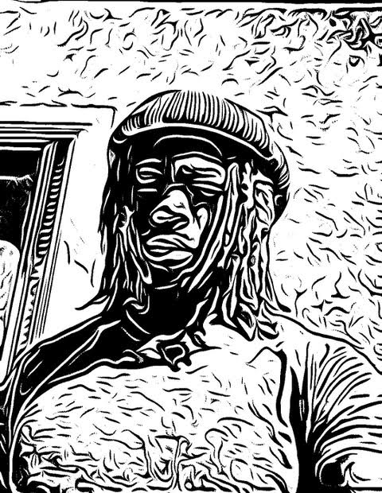

Who's He?
Hello, I'm Hasani Smith, and welcome to my website.
I'm currently a certified Software engineer with proficient experience in electronics assembling, sheet metal fabrication, as well welding.
Through my experience from various employment opportunities I've been able to combine software skills with hardware skills.
The ability to build highly proficient software and build the hardware for it. My jobs have specifically specialized in areas such as Aerospace engineering, automotive and architectural design, manufacturing, etc.
Due to my passion for science and creating, I haven't just primarily focused on just those areas of expertise. I've also built a portfolio
that ranges from a few web design, gaming, and API's.
Attributes
- High School honors graduate from Cathedral High School in Los Angeles,Ca
- 2yrs studying at West Los Angeles College majoring in computer science
- Certified Software Engineer
- Mechanical&Electrical Engineer
Currently
As of now, I'm creating a variety of different projects that ranges from web and app design, gaming, blockchain,
robotics, aerospace, e-commerce, and mobile apps. I will be the most innovatve and multifaceted ENGINEER ever.
